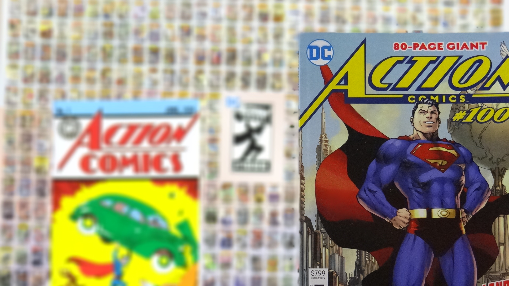

Víctor Eduardo López Téllez
Soy estudiante del Tecnológico de Monterrey, Campus Ciudad de México. Me especializo en el área 3D. Tengo experiencia en creación de personajes, realización de cortometrajes tanto animados como live action, soy una persona creativa. Que busca la solución a cualquier tipo de problemática, disfruto trabajar en equipo, meticuloso y tolerante.
Datos Personales
- Fecha de nacimiento: 21/05/1996
- Ciudad de México
- Estudiante en Tec de Monterrey CCM
- LAD
Experiencia Laboral
- Generador 3D, Creative Jam 2020 del Tecnológico de Monterrey CCM.
- Actor en el cortometraje The Good father. Presentado en el Tecnológico de Monterrey CCM.
- Cocreador de juego de mesa para Global Game Jam GIGASEDE México
- Profesor auxiliar de nivel secundaria de informática y matemáticas, Instituto Vancouver.
- Actor en el cortometraje ¿Eres tú? Presentado en el Tecnológico de Monterrey CCM.
- Soporte técnico y mantenimiento.
Habilidades
- Analitico
- Practico
- Organizado
- Eficiente
- Liderazgo

| Hora | Lunes | Martes | Miercoles | Jueves | Viernes |
|---|---|---|---|---|---|
| Modelado 3D | Dibujo | Descanso | Programación | Animación 2D | Asesoria |
| Asesoria | Programación | Animación 2D | Dibujo | Modelado 3D | Descanso |
https://www.artstation.com/victortellez